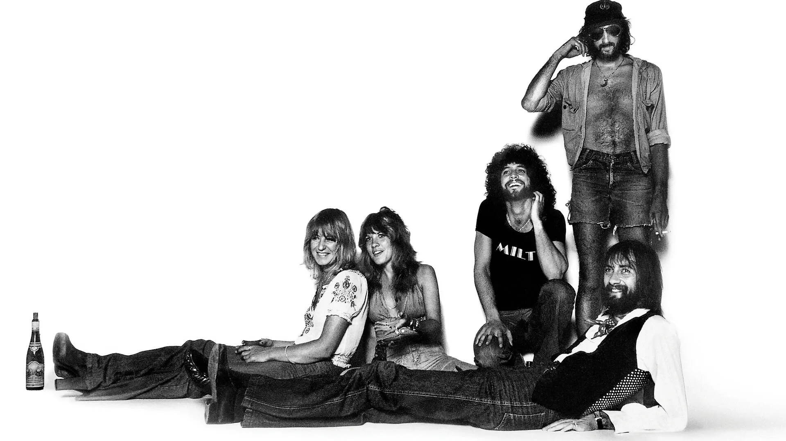
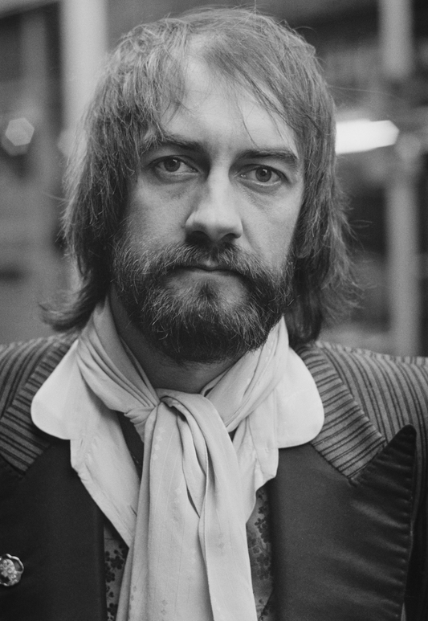
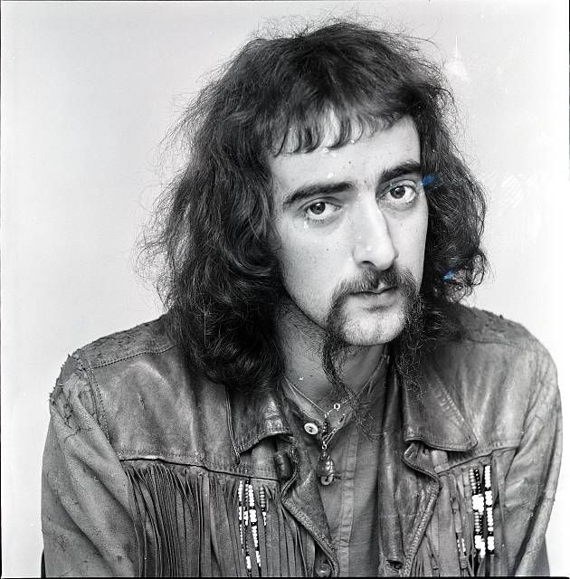
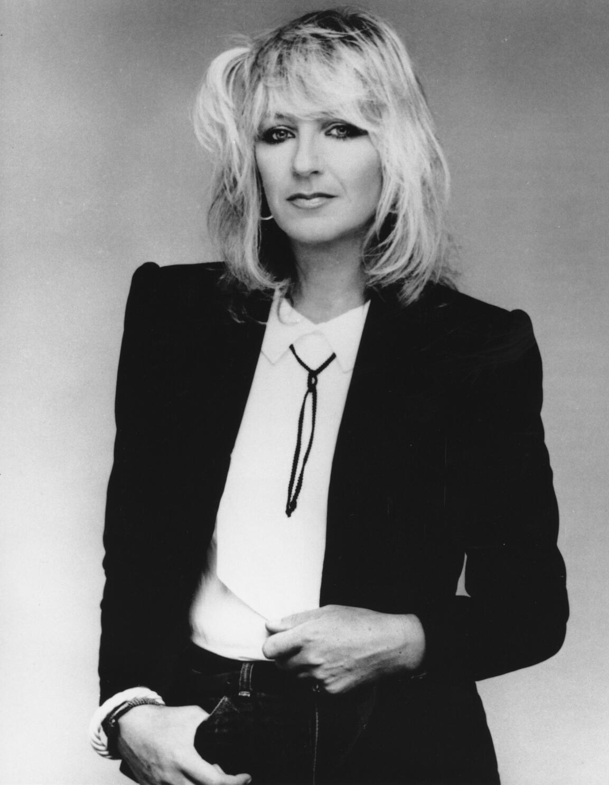
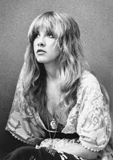
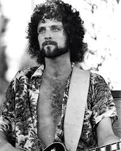

The Band
Fleetwood Mac were a British and American rock band formed in London in 1967 by singer and guitarist Peter Green. Green named the band by combining the surnames of drummer Mick Fleetwood and bassist John McVie, the only two constant members of the band throughout its history. Fleetwood Mac have sold more than 120 million records worldwide, making them one of the world's best-selling musical acts.
Primarily a British blues band in their early years, Fleetwood Mac achieved a UK number one single in 1968 with the instrumental "Albatross" and had other UK top ten hits with "Man of the World", "Oh Well" (both 1969), and "The Green Manalishi (With the Two Prong Crown)" (1970). Green left the band in May 1970 and McVie's wife, Christine McVie, joined as an official member on vocals and keyboards two months later, having previously contributed to the band as a session musician. Other key members during the band's early years were Jeremy Spencer, Danny Kirwan, and Bob Welch. By the end of 1974, these members had departed, which left the band without a guitarist and male singer. While Fleetwood was scouting studios in Los Angeles, he heard the American folk rock duo Buckingham Nicks, consisting of guitarist and singer Lindsey Buckingham and singer Stevie Nicks. In December 1974, he asked Buckingham to join Fleetwood Mac, with Buckingham agreeing on the condition that Nicks could also join. The addition of Buckingham and Nicks gave the band a more pop rock sound, and their 1975 album Fleetwood Mac topped the Billboard 200 chart in the United States. Their next album, Rumours (1977), reached number one in multiple countries around the world and won the Grammy Award for Album of the Year in 1978.
The line-up remained stable through three more studio albums, but by the late 1980s began to disintegrate. After Buckingham left in 1987, he was replaced by Billy Burnette and Rick Vito, although Vito left in 1990 along with Nicks. A 1993 one-off performance for the first inauguration of President Bill Clinton reunited the classic 1974–1987 line-up for the first time in six years. A full-scale reunion took place four years later, and Fleetwood Mac released their fourth U.S. No. 1 album, The Dance (1997), a live album marking the 20th anniversary of Rumours and the band's 30th anniversary. Christine McVie left in 1998 after the completion of The Dance Tour, but rejoined in 2014 for their On With the Show Tour. Fleetwood Mac released their final studio album, Say You Will, in 2003. In 2018, Buckingham was fired and replaced by Mike Campbell, formerly of Tom Petty and the Heartbreakers, and Neil Finn of Split Enz and Crowded House. After Christine McVie's death in 2022, Nicks stated her belief in 2024 that the band would not continue without her.
In 1979, Fleetwood Mac were honoured with a star on the Hollywood Walk of Fame. In 1998, they were inducted into the Rock and Roll Hall of Fame and received the Brit Award for Outstanding Contribution to Music. In 2018, Fleetwood Mac received the MusiCares Person of the Year award from the Recording Academy in recognition of their artistic achievement in the music industry and dedication to philanthropy.

Drums and Percussion
Mick Fleetwood
Michael John Kells Fleetwood (born 24 June 1947) is an English musician, songwriter and actor. He is the drummer, co-founder, and leader of the rock band Fleetwood Mac. Fleetwood, whose surname was merged with that of the group's bassist John "Mac" McVie (the only two members to appear on every studio album during the band's run) to form the name of the band. He was inducted into the Rock and Roll Hall of Fame with Fleetwood Mac in 1998.
Born in Redruth, Cornwall, Fleetwood lived in Egypt and Norway for much of his childhood. Choosing to follow his musical interests, Fleetwood travelled to London at the age of 15, eventually forming the first incarnation of Fleetwood Mac with Peter Green, Jeremy Spencer and Bob Brunning. After several album releases and line-up changes, the group moved to the United States in 1974. Fleetwood then invited Lindsey Buckingham and Stevie Nicks to join. Buckingham and Nicks contributed to much of Fleetwood Mac's later commercial success, including the celebrated album Rumours, while Fleetwood's own determination to keep the band together was essential to the band's longevity. Fleetwood has also enjoyed a solo career, published written works, and flirted briefly with acting.

Bass
John McVie
John Graham McVie (born 26 November 1945) is a British bass guitarist. He is best known as a member of the rock bands John Mayall & the Bluesbreakers from 1964 to 1967 and Fleetwood Mac since 1967. His surname, combined with that of drummer Mick Fleetwood, was the source for the band's name.
He joined Fleetwood Mac shortly after its formation by guitarist Peter Green in 1967, replacing temporary bass guitarist Bob Brunning. McVie and Fleetwood are the only two members of the group to appear on every Fleetwood Mac release, and for over fifty years have been the group's last remaining original (or almost original in McVie's case) members.
In 1968, McVie married blues pianist and singer Christine Perfect, who became a member of Fleetwood Mac two years later. John and Christine McVie divorced in 1976, but continued working together professionally. During this time, the band recorded the album Rumours, a major commercial success with a title that referenced the turmoil in the band's romantic relationships.
McVie was inducted into the Rock and Roll Hall of Fame in 1998 as a member of Fleetwood Mac. McVie is listed at number 37 on Rolling Stone's list of the fifty greatest bassists of all time.

Keyboards and Vocals
Christine McVie
Christine Anne McVie (12 July 1943 – 30 November 2022) was an English musician. She was the keyboardist and one of the vocalists and songwriters of the rock band Fleetwood Mac.
McVie was a member of several bands, notably Chicken Shack, in the mid-1960s British blues scene. She initially began working with Fleetwood Mac as a session player in 1968, before officially joining the band two years later. Her first compositions with Fleetwood Mac appeared on their fifth album, Future Games. She remained with the band through many changes of line-up, writing songs and performing lead vocals before partially retiring in 1998.
McVie was described as "the prime mover behind some of Fleetwood Mac's biggest hits" and eight songs she wrote or co-wrote, including "Say You Love Me", "Don't Stop", "Everywhere" and "Little Lies", appeared on Fleetwood Mac's 1988 Greatest Hits album. She appeared as a session musician on the band's last studio album, Say You Will. McVie also released three solo studio albums and recorded a duet album with Lindsey Buckingham. McVie was noted for her soulful contralto voice.
As a member of Fleetwood Mac, McVie was inducted into the Rock and Roll Hall of Fame and in 1998 received the Brit Award for Outstanding Contribution to Music. In the same year, after almost 30 years with Fleetwood Mac, she left the band and lived in semi-retirement, releasing a solo album in 2004. She appeared on stage with Fleetwood Mac at the O2 Arena in London in September 2013 and rejoined the band in 2014 prior to their On with the Show tour.
McVie received a Gold Badge of Merit Award from BASCA, now The Ivors Academy, in 2006. She received the Ivor Novello Award for Lifetime Achievement from the British Academy of Songwriters, Composers and Authors in 2014 and was honoured with the Trailblazer Award at the UK Americana Awards in 2021. She was also the recipient of two Grammy Awards.

Vocals
Stevie Nicks
Stephanie Lynn Nicks (born May 26, 1948) is an American singer-songwriter, known for her work with the band Fleetwood Mac and as a solo artist.
After starting her career as a duo with her then-boyfriend Lindsey Buckingham, releasing the album Buckingham Nicks to little success, the pair joined Fleetwood Mac in 1975, helping the band to become one of the best-selling music acts of all time with over 120 million records sold worldwide. Rumours, the band's second album with Nicks, became one of the best-selling albums worldwide, being certified 21× platinum in the US. In 1981, while remaining a member of Fleetwood Mac, Nicks began her solo career, releasing the studio album Bella Donna, which topped the Billboard 200 and has reached multiplatinum status. She has released eight studio albums as a solo artist and seven with Fleetwood Mac, selling a certified total of 65 million copies in the US alone.
After the release of her first solo album, Rolling Stone named her the "Reigning Queen of Rock and Roll". Nicks was named one of the 100 Greatest Songwriters of All Time and one of the 100 Greatest Singers of All Time by Rolling Stone. Her Fleetwood Mac songs "Landslide", "Rhiannon", and "Dreams", with the last being the band's only number one hit in the U.S., together with her solo hit "Edge of Seventeen", have all been included in Rolling Stone's list of the 500 Greatest Songs of All Time. Nicks is the first woman to have been inducted twice into the Rock and Roll Hall of Fame; she was inducted as a member of Fleetwood Mac in 1998 and was inducted as a solo artist in 2019.
Nicks has garnered eight Grammy Award nominations and two American Music Award nominations as a solo artist. She has won numerous awards with Fleetwood Mac, including a Grammy Award for Album of the Year in 1978 for Rumours. The albums Fleetwood Mac, Rumours, and Bella Donna have been included in the "Greatest of All Time Billboard 200 Albums" chart by Billboard. Rumours was also rated the seventh-greatest album of all time in Rolling Stone's list of the "500 Greatest Albums of All Time",[11] as well as the fourth-greatest album by female acts.

Guitar and Vocals
Lindsey Buckingham
Lindsey Adams Buckingham (born October 3, 1949) is an American musician, record producer, and the lead guitarist and co-lead vocalist of the rock band Fleetwood Mac from 1975 to 1987 and 1997 to 2018. In addition to his tenure with Fleetwood Mac, Buckingham has released seven solo studio albums and three live albums. As a member of Fleetwood Mac, he was inducted into the Rock and Roll Hall of Fame in 1998. Buckingham was ranked 100th in Rolling Stone's 2011 list of "The 100 Greatest Guitarists of All Time". Buckingham is known for his fingerpicking guitar style.
Buckingham joined Fleetwood Mac in 1975, replacing guitarist Bob Welch, and convinced the group to recruit his musical (and, at the time, romantic) partner Stevie Nicks as well. Buckingham and Nicks became prominent members of Fleetwood Mac during its most commercially successful period, highlighted by the multi-platinum studio album Rumours (1977), which sold over 40 million copies worldwide. Though highly successful, the group experienced almost constant creative and personal conflict, and Buckingham left the band in 1987 to focus on his solo career. Hit songs Buckingham wrote and sang with Fleetwood Mac include "Go Your Own Way", "Never Going Back Again", "Tusk", and "Big Love".
A one-off reunion at the 1993 inauguration ball for President Bill Clinton initiated some rapprochement between the former band members, with Buckingham performing some vocals on one track of their 1995 studio album Time, and rejoining the band full-time in 1997 for the live tour and album The Dance. In 2018, Buckingham was dismissed from Fleetwood Mac and replaced by Mike Campbell and Neil Finn.
Others
Fleetwood Mac had many members throughout the years. With only the founders John McVie and Mick Fleetwood being a constant.
And they are, Peter Green (1967-1970) as guitar, lead and backing vocals as well as harmonica; Jeremy Spencer (1967-1971) as slide guitar, lead and backing vocals and piano.; Bob Brunning (1967) as bass; Danny Kirwan (1968-1972) as guitar and lead and backing vocals; Bob Welch (1971-1974) as guitar and lead and backing vocals; Bob Weston (1972-1973) as lead and slide guitar and backing vocals; Dave Walker (1972-1973) as lead and backing vocals and harmonica; Billy Burnette (1987-1995) as rhythm guitar and backing and lead vocals; Rick Vito (1987-1990) as lead guitar and backing and lead vocals; Dave Mason (1993-1995) as lead guitar and backing and lead vocals; Bekka Bramlett (1993-1995) as lead and backing vocals; Mike Campbell (2018-2022) as lead guitar and backing and occasional lead vocals; Neil Finn (2018-2022) as rhythm and lead guitar amd lead and backing vocals.